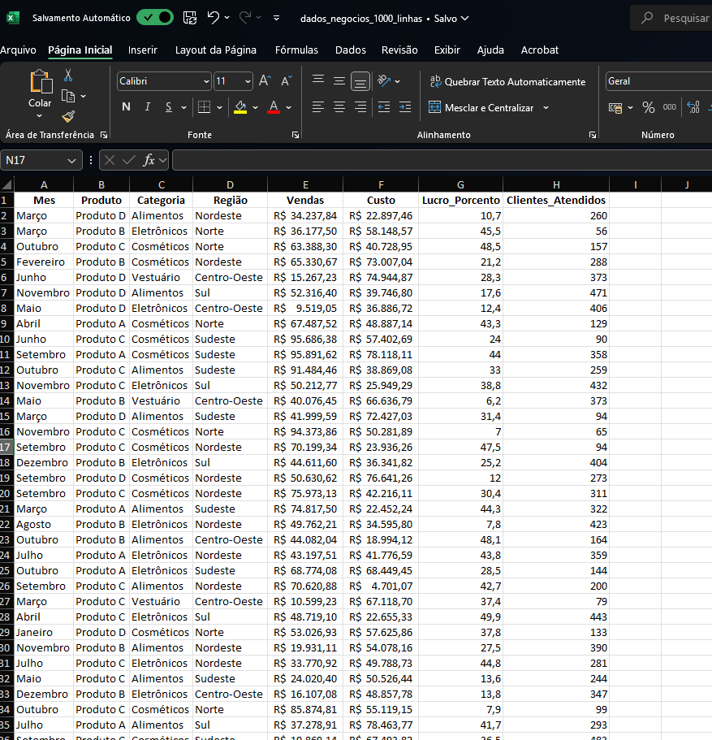
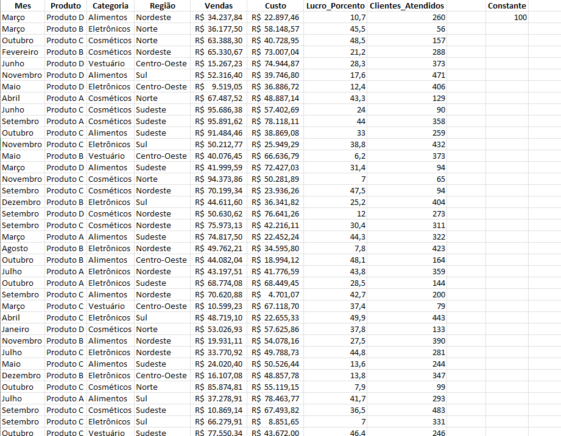
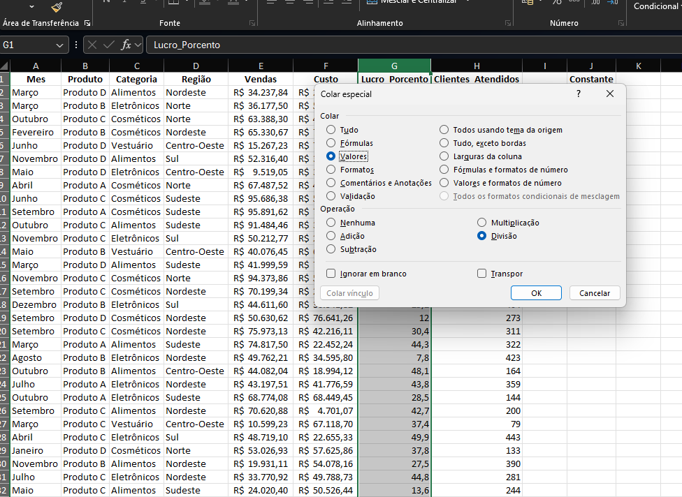
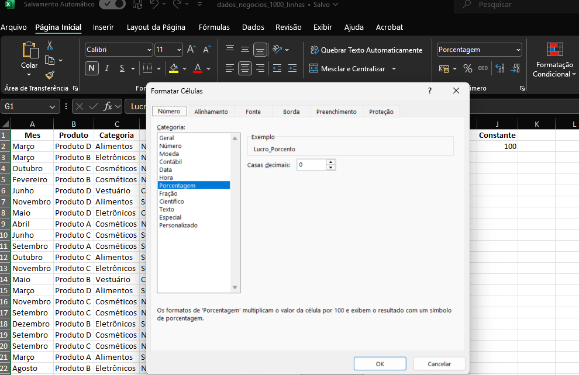
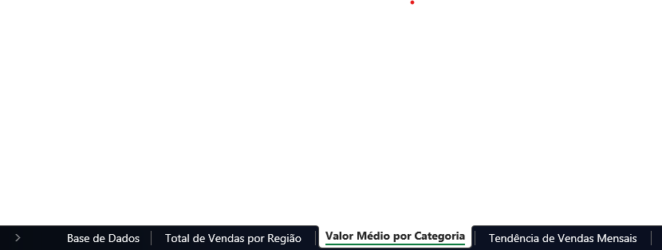
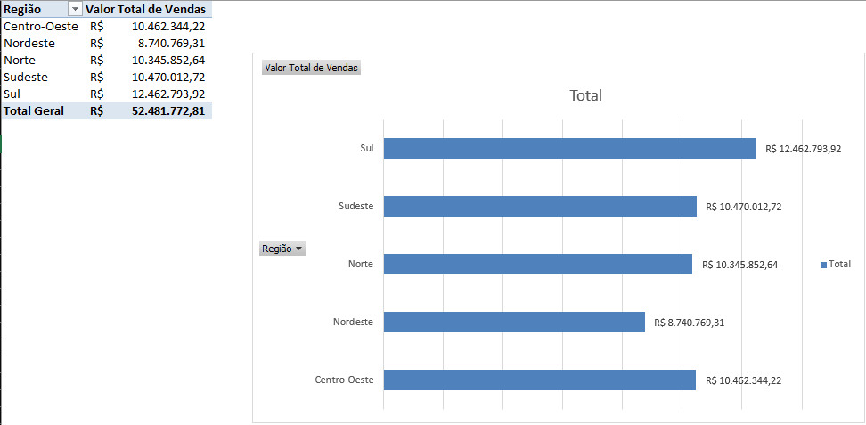
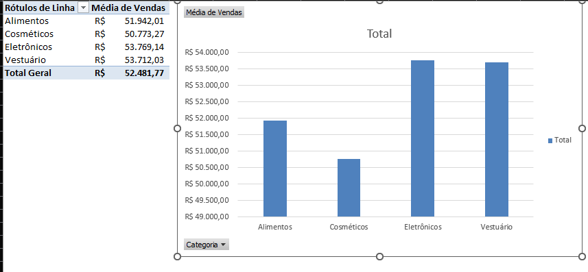
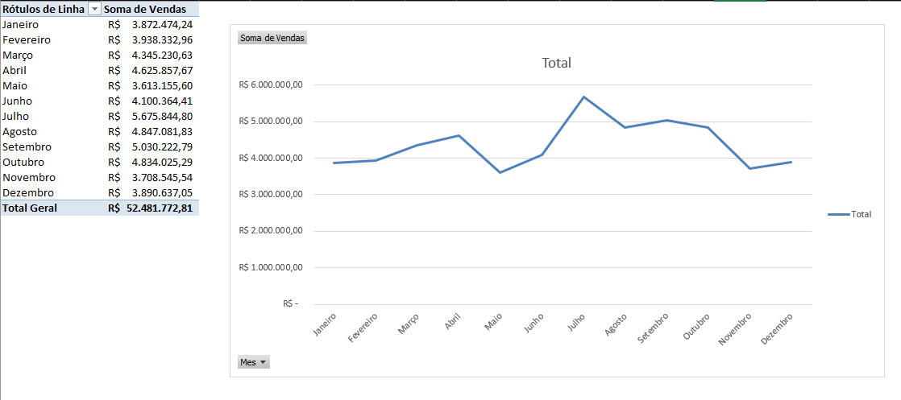

Este artigo foi reescrito em Sábado, 30 de Novembro de 2024.
Análise descritiva de dados Usando Excel
Introdução
A análise descritiva de dados é uma etapa fundamental em qualquer projeto de análise de dados. Ela permite que você entenda melhor os dados com os quais está trabalhando e fornece insights que podem ser usados para tomar decisões informadas.
Neste tutorial, vamos mostrar como realizar uma análise descritiva de dados usando o Excel. Vamos abordar os seguintes tópicos:
Passo 1: Configuração da Planilha
Abrir o excel e verificar se está tudo ok.

A coluna A contém os meses, a coluna B contém os produtos, a coluna C as categorias, a coluna D as regiões, a coluna E as regiões a coluna F os custos, a coluna G o lucro em porcentagem, onde precisamos resolver um poblema relacionado à forma como os valores estão tipados e a coluna H com o número de clientes atendidos. Esses dados são fictícios e foram criados para este tutorial. O código R usado para criar esses dados podem ser encontrados aqui.
Como identificamos o ERRO na coluna G, vamos corrigir isso.
vamos criar uma célula constante com o valor 100, para que possamos dividir o lucro por 100 e transformar em porcentagem.

Vamos selecionar a célula J2 e copiar o valor 100.
Selecionar a coluna G e selecionar colar especial e selecionar a opção Dividir.

Agora vamos formatar a coluna G para porcentagem.
5.1 Selecionar a coluna G.
5.2 Clicar com o botão direito do mouse e selecionar a opção Formatar células.
5.3 Selecionar a opção Porcentagem.

Passo 2: Análise dos Dados
Primeiro vamos preparar a planilha para a análise.
1.1 Criar guias separadas para as análises.
Base de dados
Valor Total de Vendas por Região
Valor Médio por Categoria
Tendência de Vendas Mensais

Passo 3: Análise dos Dados
Total de Vendas por Região
Vamos calcular o valor total das vendas por região.
Vamos criar uma tabela dinâmica.
1.1 Selecionar os dados e clicar em Inserir > Tabela Dinâmica.
1.2 Selecionar a opção Nova Planilha.
1.3 Arrastar a região para a área de linhas e o custo para a área de valores.
 Como podemos ver, a região Sul teve o maior valor de vendas, seguido pela região Sudeste e Centro-Oeste.
Lucro Médio por Categoria
Vamos calcular o valor médio por categoria.
1.1 Criar uma tabela dinâmica.
1.2 Arrastar a categoria para a área de linhas e o lucro para a área de valores.

Tendência de Vendas Mensais
Vamos calcular a tendência de vendas mensais.
1.1 Arrastar o mês para a área de linhas e o custo para a área de valores.
1.2 Selecionar a opção Linha de Tendência.

Conclusão
Neste tutorial, mostramos como realizar uma análise descritiva de dados usando o Excel. A análise descritiva de dados é uma etapa fundamental em qualquer projeto de análise de dados e fornece insights que podem ser usados para tomar decisões informadas.
Sobre os dados fictícios usados neste tutorial, eles foram criados usando o código R abaixo:
Code
if (!require("writexl")) install.packages("writexl")
Carregando pacotes exigidos: writexl
Code
library(writexl)set.seed(123) n <-1000dados_negocios <-data.frame(Mes =sample(c("Janeiro", "Fevereiro", "Março", "Abril", "Maio", "Junho", "Julho", "Agosto", "Setembro", "Outubro", "Novembro", "Dezembro"), n, replace =TRUE),Produto =sample(c("Produto A", "Produto B", "Produto C", "Produto D"), n, replace =TRUE),Categoria =sample(c("Eletrônicos", "Vestuário", "Cosméticos", "Alimentos"), n, replace =TRUE), Região =sample(c("Norte", "Sul", "Sudeste", "Centro-Oeste", "Nordeste"), n, replace =TRUE),Vendas =round(runif(n, min =5000, max =100000), 2), Custo =round(runif(n, min =3000, max =80000), 2), Lucro_Porcento =round(runif(n, min =5, max =50), 1), Clientes_Atendidos =sample(50:500, n, replace =TRUE) )# Exportar para Excelwrite_xlsx(dados_negocios, "dados_negocios_1000_linhas.xlsx")# Mensagem de sucessocat("Planilha 'dados_negocios_1000_linhas.xlsx' gerada com sucesso na pasta de trabalho!")
Planilha 'dados_negocios_1000_linhas.xlsx' gerada com sucesso na pasta de trabalho!
---title: "Análise descritiva de dados Usando Ecel"subtitle: "Análise de Negócios Usando Ecel"description: "Esse é um exemplo de descrição"author: "Wellington Santos Souza"date: "2024-11-30"format: html: code-fold: true code-copy: true code-tools: truecategories: [r, excel]open-graph: description: "Em constru..." image: ../images/excel.webptwitter-card: description: "Em constru..." image: ../images/excel.webp---*Este artigo foi reescrito em Sábado, 30 de Novembro de 2024.*{fig-alt="Excel" width=50%}# Análise descritiva de dados Usando Excel## IntroduçãoA análise descritiva de dados é uma etapa fundamental em qualquer projeto de análise de dados. Ela permite que você entenda melhor os dados com os quais está trabalhando e fornece insights que podem ser usados para tomar decisões informadas.Neste tutorial, vamos mostrar como realizar uma análise descritiva de dados usando o Excel. Vamos abordar os seguintes tópicos:### Passo 1: Configuração da Planilha1. Abrir o excel e verificar se está tudo ok.A coluna A contém os meses, a coluna B contém os produtos, a coluna C as categorias, a coluna D as regiões, a coluna E as regiões a coluna F os custos, a coluna G o lucro em porcentagem, onde precisamos resolver um poblema relacionado à forma como os valores estão tipados e a coluna H com o número de clientes atendidos. Esses dados são fictícios e foram criados para este tutorial. O código R usado para criar esses dados podem ser encontrados [aqui](xxx). Como identificamos o ERRO na coluna G, vamos corrigir isso.2. vamos criar uma célula constante com o valor 100, para que possamos dividir o lucro por 100 e transformar em porcentagem. 3. Vamos selecionar a célula J2 e copiar o valor 100.4. Selecionar a coluna G e selecionar colar especial e selecionar a opção Dividir.5. Agora vamos formatar a coluna G para porcentagem.5.1 Selecionar a coluna G.5.2 Clicar com o botão direito do mouse e selecionar a opção Formatar células.5.3 Selecionar a opção Porcentagem.### Passo 2: Análise dos Dados1. Primeiro vamos preparar a planilha para a análise.1.1 Criar guias separadas para as análises.- Base de dados- Valor Total de Vendas por Região- Valor Médio por Categoria- Tendência de Vendas Mensais### Passo 3: Análise dos Dados#### Total de Vendas por Região1. Vamos calcular o valor total das vendas por região.- Vamos criar uma tabela dinâmica.1.1 Selecionar os dados e clicar em Inserir > Tabela Dinâmica.1.2 Selecionar a opção Nova Planilha.1.3 Arrastar a região para a área de linhas e o custo para a área de valores.Como podemos ver, a região Sul teve o maior valor de vendas, seguido pela região Sudeste e Centro-Oeste.#### Lucro Médio por Categoria1. Vamos calcular o valor médio por categoria.1.1 Criar uma tabela dinâmica.1.2 Arrastar a categoria para a área de linhas e o lucro para a área de valores.#### Tendência de Vendas Mensais1. Vamos calcular a tendência de vendas mensais.1.1 Arrastar o mês para a área de linhas e o custo para a área de valores.1.2 Selecionar a opção Linha de Tendência.# Conclusão Neste tutorial, mostramos como realizar uma análise descritiva de dados usando o Excel. A análise descritiva de dados é uma etapa fundamental em qualquer projeto de análise de dados e fornece *insights* que podem ser usados para tomar decisões informadas. Sobre os dados fictícios usados neste tutorial, eles foram criados usando o código R abaixo:```{r}if (!require("writexl")) install.packages("writexl")library(writexl)set.seed(123) n <-1000dados_negocios <-data.frame(Mes =sample(c("Janeiro", "Fevereiro", "Março", "Abril", "Maio", "Junho", "Julho", "Agosto", "Setembro", "Outubro", "Novembro", "Dezembro"), n, replace =TRUE),Produto =sample(c("Produto A", "Produto B", "Produto C", "Produto D"), n, replace =TRUE),Categoria =sample(c("Eletrônicos", "Vestuário", "Cosméticos", "Alimentos"), n, replace =TRUE), Região =sample(c("Norte", "Sul", "Sudeste", "Centro-Oeste", "Nordeste"), n, replace =TRUE),Vendas =round(runif(n, min =5000, max =100000), 2), Custo =round(runif(n, min =3000, max =80000), 2), Lucro_Porcento =round(runif(n, min =5, max =50), 1), Clientes_Atendidos =sample(50:500, n, replace =TRUE) )# Exportar para Excelwrite_xlsx(dados_negocios, "dados_negocios_1000_linhas.xlsx")# Mensagem de sucessocat("Planilha 'dados_negocios_1000_linhas.xlsx' gerada com sucesso na pasta de trabalho!")```